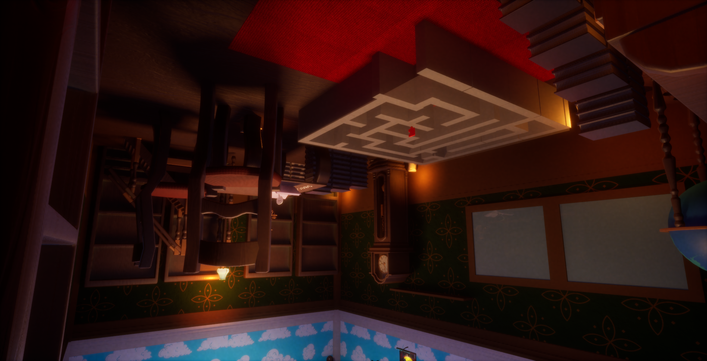
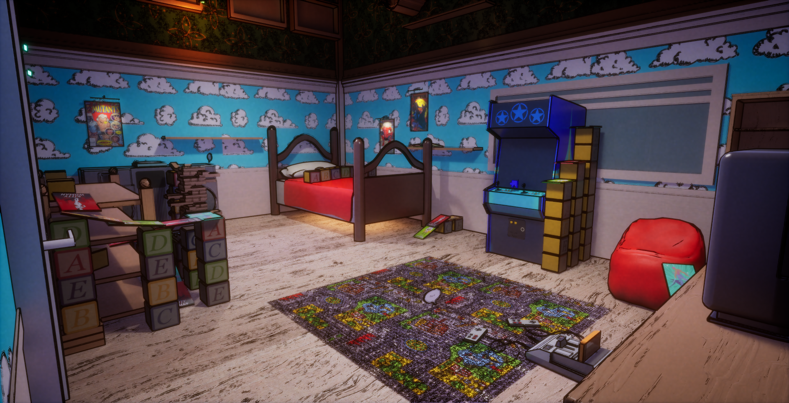

You play as a young adult who is magically shrunk inside their childhood bedroom.
Above you, on the ceiling, lies an inverted version of the same room—set in a different time.
To escape, you must gather word bubbles that unlock new abilities and gradually form a hidden poem. Switching between these parallel worlds is the key to uncovering the way out.
This project was carried out as part of the Global Game Jam 2025, whose theme was “Bubble”, and lasted 48 hours.


My Role
Developed a dimensional gravity switching system to transition between parallel realities. Upon collecting the target bubble and activating the input, gravity inverts instantly along with the camera orientation, delivering smooth and engaging gameplay feel.
Designed a puzzle system requiring activation of specific cubes in the exact sequence shown by an overhead ceiling code. This mechanic blends spatial observation and sequential memory for engaging progression.
Technologies
Unreal Engine 5C++
Blueprint
Github
This project was a very enriching experience, as it allowed me to create interesting gameplay mechanics within a limited timeframe. I particularly enjoyed working on the gravity switching system, which represented a real technical and game design challenge. The goal was not only to make the mechanic functional, but also to make it enjoyable and immersive for the player through camera work, game feel, and polish.